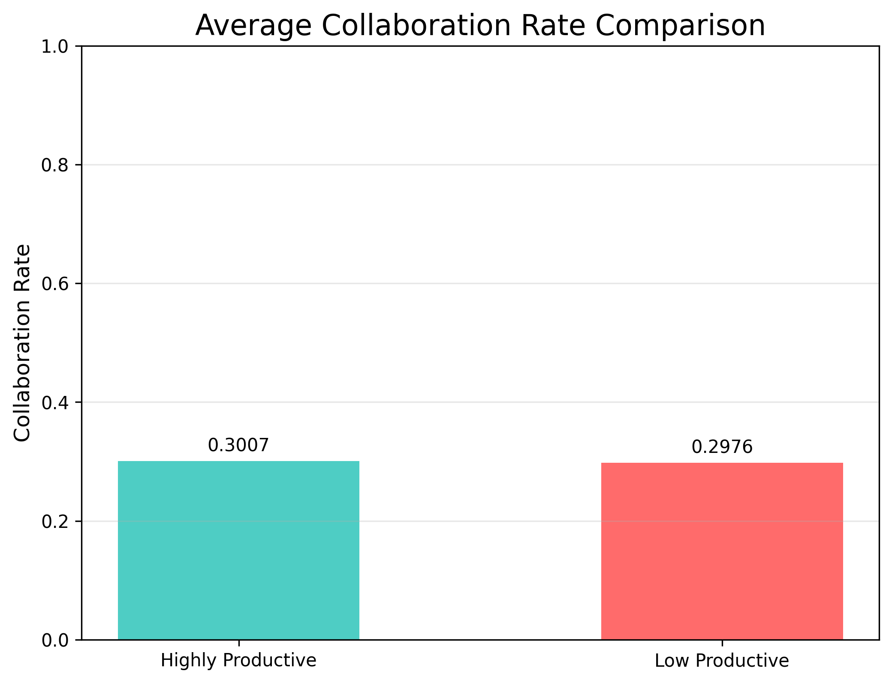
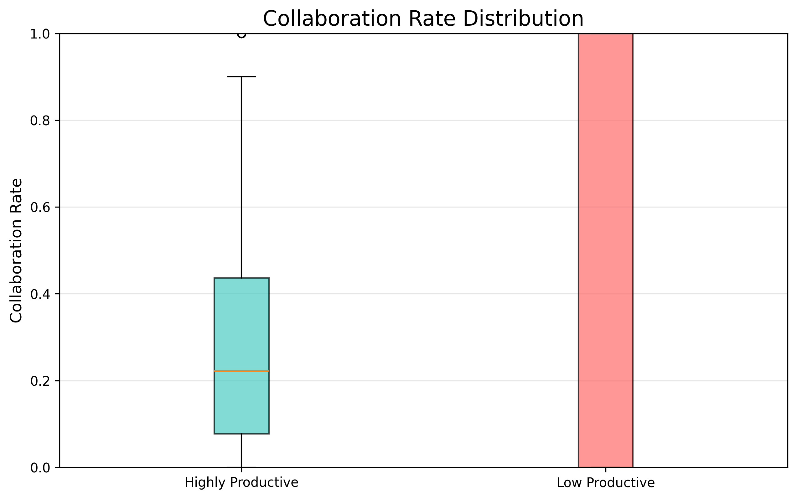
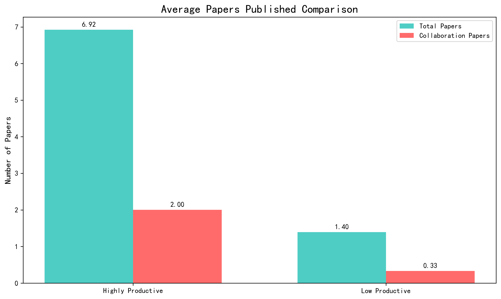

263
(Publishing ≥5 papers in any 5-year period)
8302
(Not meeting highly productive criteria)
8565
(In this analysis)
| Metric | Highly Productive Authors | Low Productive Authors |
|---|---|---|
| Average Collaboration Rate | 0.3007 | 0.2976 |
| Median Collaboration Rate | 0.2222 | 0.0000 |
| Average Total Papers | 10.02 | 1.44 |
| Average Collaboration Papers | 3.01 | 0.43 |


